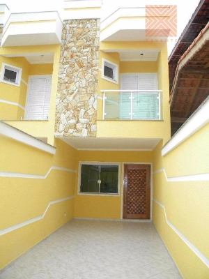
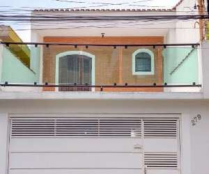
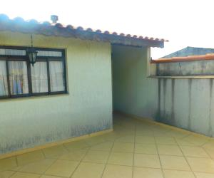
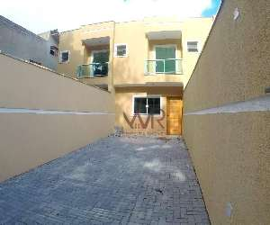
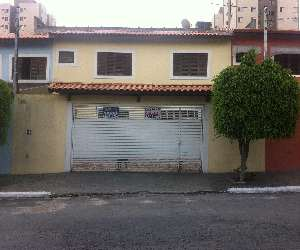

Casa em um bairro seguro na vila progresso, com 1 banheiro 2 quartos, 1 cozinha e 1 sala.
Preço R$ 200.000

Sobrado enorme e lindo de 380m² na Vila Industrial / Jd. Cotia na região, com 3 dormitórios grandes 1 suíte com hidro c/ sacada na frente de 25m², banheiro social c/ box de vidro, sala ampla copa grande, lavabo, cozinha ampla com planejados, lavanderia coberta c/ planejados, corredor lateral, quintal nos fundos,sub-solo com salão de festas com churrasqueira e lavabo, 3 vagas de garagem cobertas. Ótima localização:Á 100m da Av. Professor Luiz Ignácio Anhaia Mello, altura 8600.
Preço R$600.000

Sobrado moderno e espaçoso, bem localizado . Possui ampla sala com varanda,3 quartos com laminado e com armários, banheiros e lavabo. A cozinha é modelo americana, mobiliada com armários e gaveteiros. Imóvel com ótima localização, região arborizada, silenciosa, próximo ao shopping Tietê Plaza Ibirapuera, supermercado Extra, padarias, correio, lojas, restaurantes e serviços.
Preço R$ 700.000

Sobrado de rua em Itaquera, 3 dormitórios sendo uma suíte, sala cozinha, lavanderia, lavabo e 2 vagas de garagem, acabamento excelente. Ótima localização travessa da Avenida Cardon e paralela a Avenida Pires do Rio, região com amplo comércio, fácil acesso a Radial Leste, shopping, metro e poupa tempo de Itaquera.
Preço R$320.000

Casa bem localizada perto da Av Nossa Senhora do Sabará com comércio próximo, próximo também a ciclovia e estação de trem.